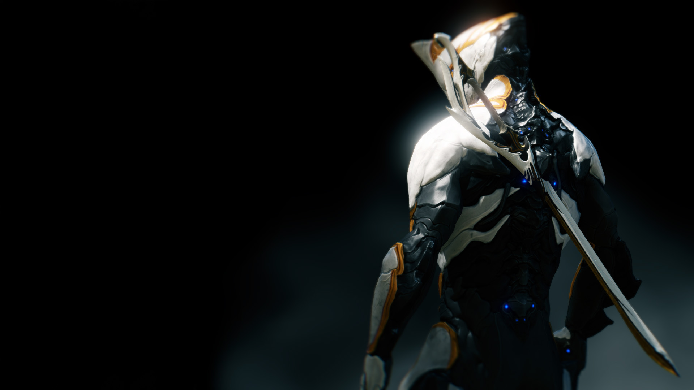
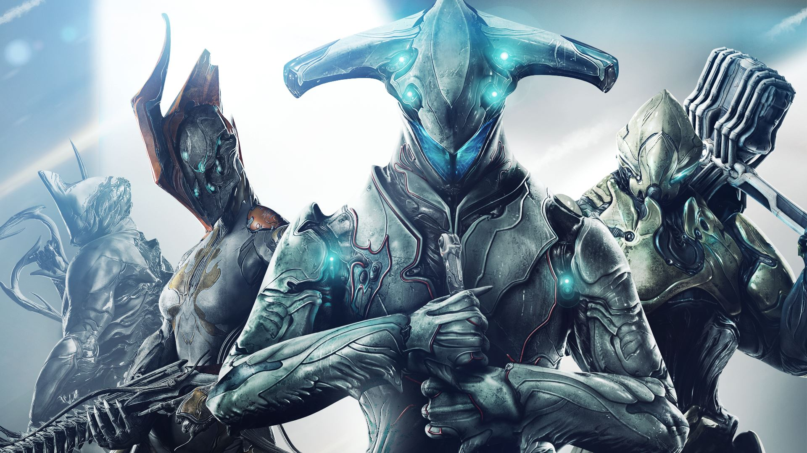

WARFRAME

WARFRAME je igra postavljena v dalnji prihodnosti, kjer se v Solarnem sistemu za prevlado bojuje več različnih skupin. Grinnerji z nepresahljivimi vojskami klonov, Corpusi z naprednimi roboti in tehnologijo, Infestation z virusno spremenjenimi bitji, in Sentienti z temačnimi in neuničljivimi vojaki.
STORY
Svet je razdeljen na štiri skupine ki se bojujejo za prevlado.
Njih so klicali Tenno. Vojaki z rezili in strelstvi; gospodarji Warframe oklepa. Tisti ki so preživeli Staro Vojno so bili zamrznjeni ter zapuščeni v ruševinah, ampak zdaj so znova potrebni.
Medtem ko se skupine bojujejo, njih budi starodaven glas in jih kliče na starodaven kraj.
Vodi jih Lotus. Rešila jih je iz milenijskega spanca, ter jih naučila znova kako uporabljati oklepe, znova postati gospodar samega sebe.
WARFRAMES

Warfames so oklepi narejeni iz pol-organske kovine, kateri vsak oklep ima drugačne sposobnosti: ogenj, led, svetloba, prostor, magnetizem... Čez njih se pretaka neskončna energija ki prihaja iz tuje demenzije.